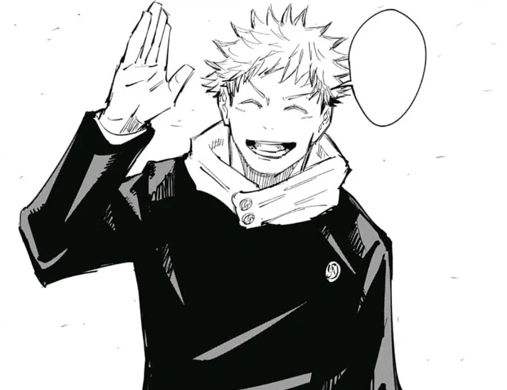

L'histoire de Jujutsu Kaisen se déroule dans un monde où des esprits maudits se nourrissent d'humains sans méfiance et où des fragments du légendaire et redouté démon Jujutsu Kaisen ont été perdus et dispersés. Si une malédiction venait à consumer les doigts de Sukuna, le pouvoir qu'ils acquerraient pourrait détruire le monde tel que nous le connaissons. Heureusement, il existe une mystérieuse école de sorciers jujutsu dont la mission est de protéger la précieuse existence des vivants contre le surnaturel !
Yuji Itadori est le personnage principal de la série Jujutsu Kaisen. Il est le fils de Jin Itadori et Kaori Itadori, et le petit-fils de Wasuke Itadori. Yuji menait une vie normale à Sendai jusqu'à ce qu'il rencontre Megumi et mange l'un des doigts de Sukuna. Après être devenu le réceptacle de Sukuna, Yuji a commencé à fréquenter le lycée Tokyo Jujutsu aux côtés de Megumi et Nobara en tant qu'élève de première année.
Sukuna is egocentric, hedonistic, psychopathic, exceptionally sadistic and selfish. Mass murder, suffering, and the screams of his victims are what the King of Curses relishes; this is best shown when he was reincarnated shortly after Yuji ingested his finger, after which he commented, implying the slaughter of women and children and likening them to maggots crawling around.